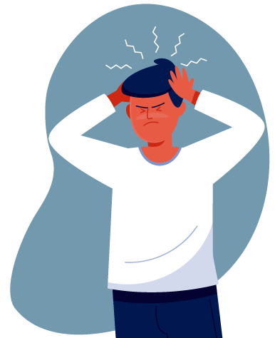

La ansiedad es un mecanismo de defensa del ser humano, por el cual pasa a estar en alerta frente a una situación muy estresante. Las personas que tienen problemas de ansiedad son aquellas que han vivido una situación de estrés extremo, se produce una alteración en los mecanismos de regulación del estrés y las emociones (principalmente en estructuras como la amígdala, el hipotálamo y la corteza prefrontal). Aquellas personas que sufren de ansiedad siempre o casi siempre tendrán niveles de ansiedad altos en el día a día; con ello, situaciones tan cotidianas como salir a comprar, ir a estudiar, ir al cine o cualquier situación del día a día se convierten en un reto constante por intentar lograrlo sin sufrir los efectos de la ansiedad. La ansiedad puede manifestarse de muchas formas, tanto físicas como psicológicas. En muchas personas puede manifestarse como temblores, escalofríos, sudoración excesiva, dificultad para tragar su propia saliva, pérdida de apetito, pérdida de peso, estado de hiperalerta e hipersensibilidad a los sonidos y los olores.

Correo: Merlindelaluna@gmail.com
Telefono:+34644446699